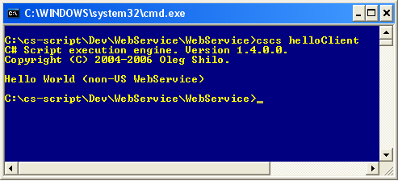

Web Services are web-based enterprise
applications that use open, XML-based standards
and transport protocols to exchange data with calling clients. Web
Services are becoming more and more popular among developers as a
choice of the technology, which offers high level of interoperability.
The simplicity of creating and consuming Web Services in .NET also
contributes to their popularity.
Consuming Web Services
Traditionally, in order to consume Web Service from managed application, you would need to execute WSDL.exe to generate .cs file containing the C# implementation of the Web Service proxy class. Such class can be utilised after it is compiled into either class library or executable.
CS-Script offers even simpler way of accessing the Web Services: "Single-line Web Service access". It means that proxy class can be made available with a single line of code in the C# script file.
It is possible because you can automate generating the proxy class with pre-script directive. Such directive would invoke the wsdl.cs script (Script Library), which is capable of generating Web Service proxy classes.
Utilising the generated proxy class in the CS-Script is extremely simple. It is because CS-Script can use external modules in a form of C# code. In other words the file containing the proxy class can be just imported at execution time, what eliminates need for compiling it into assembly (see googleWebService.cs sample (of the Script Library) for details).
This is the example of the script, which uses SayHello operation of the HelloWorld Web Service.| //css_prescript wsdl(http://localhost/hello/hello.asmx?WSDL, HelloService); //css_import HelloService; using System; using System.Xml; class Program { static void Main(string[] args) { Console.WriteLine(new HelloWorld().SayHello()); } } |
Note: If you wish you can instruct wdsl.cs (by using parameters) to generate proxy class only if it does not exist.
Always check if the Web Service is available with the IE (eg. in IE go to http://localhost/hello/hello.asmx?WSDL).
The location of the generated proxy class file depends on the HideAutoGeneratedFiles setting value (see configuration console for details). The location of this file does not affect the script code in any way.
Creating Web Services
Creating a simple Web Service in Visual Studio (VS) is trivial. It not only builds the service it can also create the deployment project for you. Despite the convenience of creating the Web Service this way sometimes it creates an impression of some kind of "magic", happening behind the scene, which actually converts a VS project code into Web Services.
Well, building and configuring the Web Service is much simpler than many developers would imagine. In fact with CS-Script you can easily convert an appropriate C# script into Web Service. And such conversion is open for analysis and adjustments (if required) because it is implemented as a script css2ws.cs (Script Library).
CS-Script is not intended to be a replacement of the MS Visual Studio as a main Web Service development tool. It just allows simple and efficient Web Service testing/prototyping.
This is the example of the Hello.cs script containing the implementation of the HelloWorld Web Service.
| using System; using System.Web; using System.Web.Services; public class HelloWorld : System.Web.Services.WebService { [WebMethod] public string SayHello() { return "Hello World (non-VS WebService)"; } } |

Note that in order to hoste Web Services MS IIS must be installed.
Pre- and Post-execution scripts | Importing scripts | Script Library